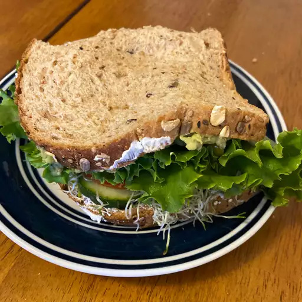

Cucumber Sandwich

Description
Make a delicious Sandwich stuffed with veggies and other goodies by
following this handed down recipe you're guaranteed to enjoy it
Ingredients
- 2 thick slices whole wheat bread
- 2 tablespoons cream cheese, softened
- 6 slices cucumber
- 2 tablespoons alfalfa sprouts
- 1 teaspoon olive oil
- 1 teaspoon red wine vinegar
- 1 tomato, sliced
- 1 leaf lettuce
- 1 ounce pepperoni, sliced
- ½ avocado, mashed
Steps
- Spread each slice of bread with 1 tablespoon cream cheese.
- On one slice of bread, arrange cucumber slices in a single layer.
- Cover with sprouts, then sprinkle with oil and vinegar. Layer tomato slices, lettuce, and pepperoni.
- Spread other slice of bread with mashed avocado. Close sandwich and serve immediately.